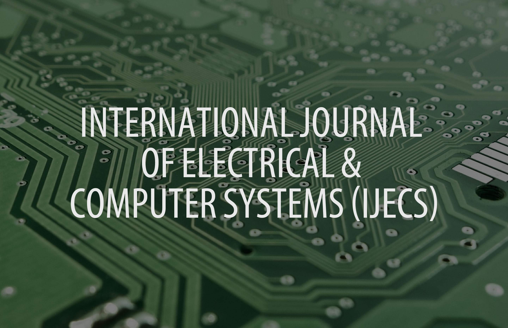

<div class="unit unit-s-1 unit-m-1 unit-l-1">
    {% include slider.html %}
  	
    <div class="main-content">
  	<div class="journals">
  		<h2>Journals</h2>

  		<div class="unit unit-s-1 unit-s-1-4-1 unit-m-1-4 unit-l-1-4-1">
  			<a href="https://are.avestia.com" target="blank" alt="Advances in Renewable Energy (ARE)">
				
			</a>
  		</div>

  		<div class="unit unit-s-1 unit-s-1-4-1 unit-m-1-4 unit-l-1-4-1">
  			<a href="https://cvmldm.avestia.com" target="blank" alt="International Journal of Computer Vision, Machine Learning and Data Mining (CVMLDM)">
				
			</a>
  		</div>

  		<div class="unit unit-s-1 unit-s-1-4-1 unit-m-1-4 unit-l-1-4-1">
  			<a href="https://ijecs.avestia.com" target="blank" alt="International Journal of Electrical and Computer Systems (IJECS)">
				
			</a>
  		</div>

  		<div class="unit unit-s-1 unit-s-1-4-1 unit-m-1-4 unit-l-1-4-1">
  			<a href="https://ijepr.avestia.com" target="blank" alt="International Journal of Environmental Pollution and Remediation (IJEPR)">
				
			</a>
  		</div>

  		<p class="body-1"><a href="journals" class="more">View More</a></p>
  	</div> <!-- Journals -->

  	<div class="recent">
  		<div class="unit unit-s-1 unit-s-1-2 unit-m-1-2 unit-l-1-2">
  			<div class="unit-spacer">
          <h2>Recent Publications</h2>

  				<a href="http://cvmldm.avestia.com/2015/004.html" class="body-link">Rearrangement of Attributes in Information Table and its Application for Missing Data Imputation</a>
  				<p class="body">Gongzhu Hu, Feng Gao</p>
  				<!-- -///// -->
  				<a href="http://jbb.avestia.com/2015/002.html" class="body-link">Isolation of Cellulolytic Organisms from the Gut Contents of Termites Native to Nepal and Their Utility in Saccharification and Fermentation of Lignocellulosic Biomass</a>
  				<p class="body">Dinita Sharma, Bishnu Joshi, Megh Raj Bhatt, Jarina Joshi, Rajani Malla, Tribikram Bhattarai, Lakshmaiah Sreerama</p>
          <!-- //// -->
          <a href="http://ijmem.avestia.com/2015/002.html" class="body-link">Errata for: "Kinematic Analysis and Locomotion Strategy of a Pipe Inspection Robot Concept for Operation in Active Pipelines"</a>
          <p class="body">Amr Bekhit, Abbas Dehghani, Robert Richardson</p>
  			</div>
  		</div> <!-- RECENT -->

  		<div class="unit unit-s-1 unit-s-1-2 unit-m-1-2 unit-l-1-2">
  			<div class="unit-spacer">
          <h2>Most Visited Articles</h2>
          <script>
            window.onload=mostVisited;
          </script>
          <div id="mostVisited"></div>
  			</div>
  		</div>

  		<p class="body-1"><a href="recent" class="more">View More</a></p>
  	</div> <!-- Recent Publications -->

  	<div class="ethics-guidelines">
  		<div class="unit unit-s-1 unit-s-1-2 unit-m-1-2 unit-l-1-2">
  			<div class="unit-spacer ethics">
  				<h2>Ethics in Publishing</h2>
  				<p class="body">At Avestia, we take matters that relate to ethics in publishing very seriously. We believe that the peer-review publication process is a vital building block of academia, and its integrity must be maintained at all costs. To achieve this goal, we believe authors, reviewers, editors, and publishers alike must play their roles with high standard and care.</p>

  				<p class="body-1"><a href="ethics" class="more">Read More</a></p>
  			</div>
  		</div> <!-- Ethics -->

  		<div class="unit unit-s-1 unit-s-1-2 unit-m-1-2 unit-l-1-2">
  			<div class="unit-spacer guidelines">
  				<h2>Author Guidelines</h2>
  				<p class="body">Manuscripts are submitted via our Submission System (AMSS). Papers must be original research articles not submitted elsewhere (or extended versions of previously published work) or review papers. Processing charges apply.</p>

  				<p>&nbsp;</p>
  				<p>&nbsp;</p>

  				<p class="body-1"><a href="guidelines" class="more">Read More</a></p>
  			</div>
  		</div>
  	</div> <!-- Ethics-guidelines -->
  </div> <!-- Main Content -->
</div>